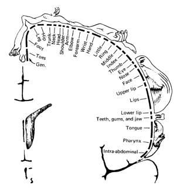
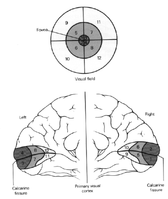

The notion of energy is certainly one of the key notions of modern science. At the beginning of the 19th Century, scientists knew about mechanical energy, chemical energy, electrical energy, and heat, but these forms of energy were considered to be different, and no relationship had been postulated between them. Furthermore, following the old ideas of Galen, many people adhered to the vitalist notion according to which there existed another form of energy, a "vital force", that was specific to living beings and unrelated to the inorganic forms of energy studied in the physical sciences.
In 1847, twenty-five year old Hermann von Helmholtz (1821-1894) had just completed his medical studies and was serving a first position as military doctor in the royal regiment in Potsdam. Though very busy with his daily medical duties, Helmholtz spent his free time studying how the muscles of frogs transform chemical energy into mechanical energy and heat. It seems that frogs are easier to obtain in springtime, and in the winter of 1946-7 Helmholtz, having none available for his experiments, took time off to do a mathematical investigation of the concept of energy. He was able to show that all forms of energy were reducible to mechanical energy. He submitted an article entitled "On the conservation of energy" to a prestigious journal, the Annals of Poggendorff, but, as is often the case with very innovative work, the journal rejected the article, claiming it was "too theoretical"[1]. Indeed, the kind of mathematical argument that Helmholtz used was distasteful to scientists at the time, although today this mode of reasoning has become fundamental in mathematical physics. Helmholtz was obliged to publish his paper at his own expense through an independent publisher[2].
At first Helmholtz's paper, which appeared in 1847, made little impression. Helmholtz was young and unknown, and being a doctor, commanded no respect among physicists and mathematicians. While some young scientists of his own generation were ready to listen to him, physicists of the old guard, still somewhat immersed in a scholastic approach to science, were unwilling to accept his approach, which was based on mathematical reasoning and not on solid empirical facts. But progressively Helmholtz's work was accepted, and his method, which was based in experiment, but which at the same time made use of rigorous mathematical techniques, ultimately transformed all the sciences of the end of the nineteenth century. Particularly with respect to biology, the idea came to be accepted that biological phenomena were subject to the same laws as the phenomena of the inorganic physical world. Today this idea is considered to be the very basis of biological science,
When the spring of 1847 brought its harvest of frogs, Helmholtz could resume his experiments and obtained a result which concerns us particularly here. With apparatus he had constructed specially to measure short time intervals of the order of ten-thousandths of a second, Helmholtz was able, in an elegant experiment published in 1850, to measure precisely the speed of conduction of the nerve signals in the motor nerve of the frog's leg. The speed was surprising slow, of the order of 27 meters per second.
Again, Helmholtz's work was received with scepticism. At the time, most thinkers believed that sensation, perception, and thought were manifestations of the spirit, and were not amenable to explanation in terms of physico-chemical laws. The sensation that occurs when we touch an object with the finger, for example, certainly was related to stimulation of the nerves in the finger, but it presumably affected the mind as a whole. Helmholz's finding that the nerve in the finger communicated the sensation to the brain only after a brief delay, amounting to about 1/30th of a second, shed doubt on the notion of the oneness of the spirit. Indeed, the well known physiologist Johannes MŸller, Helmholtz's teacher during his medical studies in Berlin, had adhered to the influential vitalistic conception that the speed of nerve impulses could not be measureable.
Like many philosophers of his time, Helmholtz's own father had difficulties accepting Helmholtz's result, and we have trace of a letter that Helmholtz wrote him explaining that it is not the finger that feals something, but the brain. The reason we perceive no delay when we touch something is that we have no way of knowing that such a delay might be present. Still, even for us today, in order to accept that the sensations impinging on our fingertips are only 'felt' a fraction of a second after they really occur, we must do violence to our notion of what we mean by the word "now". Are we somehow actually only living in the past? Are only our brains (which do not suffer any delay from being far from the nerve endings) living in the present?! It would be interesting to know what subjective sensation one would have if the delay were artificially increased by some surgical procedure or by some chemical action. Would we see something touch the finger before we felt it, somewhat like we see lightning before we hear the thunder? As will become clear later, I would predict that we would initially perceive such an asynchrony, but that we would rapidly get used it, and quickly come to perceive the felt and seen stimulations as again being simultaneous[3].
A second problem raised by Helmholtz's discovery is more fundamental. If we admit that the sensation of touching an object only occurs when the information reaches the brain, why don't we feel the sensation in the brain rather than in the finger? Perhaps it was to solve this problem that the physiologist Johannes Mueller had put forward his doctrine of "specific nerve energies". In fact a more evocative term would be "specific nerve quality": the idea was that the different nerves coming into the brain have five different qualities, and so are able to signal the five different kinds of sensation corresponding to the five senses. The example that is always cited is the thought-experiment of interchanging the nerves corresponding to sight and hearing: the affirmation was that instead of hearing thunder and seeing lightning, one would then "see" thunder and "hear" lightning.
Actually the issue does not seem so clear to me. Suppose that the nerves carry different types of 'juice', depending on the quality or origin of the information they are transmitting. When the information arrives in the brain, the brain will, from the different 'juices', be able to distinguish the origin of the information, and attribute it to the appropriate sense, and also to the appropriate location on the body (finger, toe, etc.). If we now switch the nerves, by say, attaching an ear to where an eye was attached, and vice versa, what will happen? Will 'visual juice' from the attached eye now flow along the auditory nerve, or will the auditory nerve conserve its 'auditory juice' to relay visual information?
Today neurophysiologists maintain that there is actually no difference in the inherent nature of the sensory nerves themselves, nor in the quality of the messages they transmit. All sensory nerves are constructed in the same way, and send information as bursts of electro-chemical changes called 'action potentials' that propagate along the axons. The intensity of the stimulation at the nerve's ending, independently of whether the stimuluation is mechanical, visual, etc., is assumed to be coded by the frequency of these bursts. But nothing in the message that is transmitted reveals its origin, its location, or the sensation it is associated with. The situation is similar to the electrical wiring in a house: if I dig into a wall and examine what current is flowing in a particular wire passing through at that point, it is always mains voltage. It can be on or off, that's all. I can't tell by looking at the current whether the garage door is opening or whether the hifi or oven is on.
What counts, it seems, in determining precisely what quality will be sensed when a nerve is stimulated, is nothing to do with the nerve itself, but only the cerebral area that the nerve impinges upon. Neural excitation that impinges upon the visual cortex gives rise to a visual sensation, and neural excitation that impinges upon the auditory cortex gives rise to an auditory sensation. This principle was confirmed in a striking fashion by the experiments that Penfield (19xxx) performed on patients who were undergoing surgery of their cerebral cortex. Because the cortex has no sensory nerves itself (which is in itself a curious and interesting fact!), the patient is not anesthetized, but remains conscious, and can converse with the surgeon, who meanwhile is stimulating different parts of the patient's cortex with an electrode. According to the point being stimulated, the patient experiences different sensations (auditory, visual, etc.). Stimulation of certain areas generates twitches of body parts, and other zones evoke memories. Certain deeper areas can evoke pain, pleasure, fear, anxiety, etc, so that rats for example, who have learnt to auto-stimulate their pleasure centers by pressing on a pedal connected to an electrode implanted in their brains, may die of exhaustion, because they will not stop pressing the pedal...
Physiologists today are generally satisfied that the difference in quality of different sensory inputs, what the philosophers call the "qualia", can be attributed to the different brain locations that are stimulated. But it is worth pointing out that in this modern 'explanation', Johannes MŸller's 'specific nerve quality' has merely been replaced with what might be called 'specific brain-location quality'. The question still remains of why excitation of one cortical area gives rise to one kind of sensation, whereas excitation of another area gives rise to another kind of sensation. The problem of the qualia has not been solved, just pushed back from the periphery of the nervous system into different locations of the brain. In my opinion, no progress has been made at all.
A question very similar to that discussed in the preceding section concerns, not the quality of sensations, but their perceived locations. When someone touches my finger, I feel the sensation in my finger, despite the fact that the sensation is being perceived in my brain. It is tempting to imagine that the reason the signal is felt in the finger rather than the brain is that after the signal has been received in the brain, a message is sent out to the finger to tell it that it has been touched. But of course this is nonsense, since the finger doesn't itself feel anything at all. How would the finger know it had been touched? It would have to send a message back to the brain again... and we would be in an infinite regress. No, we must assume that when a particular cortical area is stimulated, this suffices for the stimulation to be attributed to the corresponding part of the body. But then immediately the question arises of what happens in the case of sight. When I see an elephant, my retinal cells are being stimulated. Why don't I somehow feel the elephant as touching my retina, instead of 'seeing' the elephant outside me?
Just as for the problem of the different qualities of sensation, many scientists would be satisfied to argue that it is simply a property of certain parts of the cortex (e.g. corresponding to touch) that when they are stimulated, the associated stimulation is attributed to a particular body part, whereas other parts of the cortex (e.g. corresponding to vision, hearing or smell) cause the associated stimulation to be attributed to events outside the body. This view really is simply just a restatement of the observed facts, and doesn't provide an explanation of them.

Penfield's homunculus. A section through somatosensory cortex is shown, and the regions on its surface are indicated where stimulation produces sensation in a particular body part. (This is not the definitive figure, which will be better)
Unfortunately recent developments in brain science have contributed surreptitiously towards reinforcing scientists in their tendency to believe that cortical location is the "explanation" of the difference in the quality or attributed location of sensations. These recent developments concern the discovery of what are called "cortical maps". Penfield, with his electrode, had already noticed a point-by-point correspondence between somatosensory cortex and body parts, and had plotted out what is called the "Penfield homunculus", showing the interesting fact that the more sensitive or biologically more important parts of the body surface (the fingers, the tongue) occupy larger areas of cortex.
More recently, cortical maps similar to Penfield's have been found in other cortical areas, and demonstrate similar point-by-point correspondences within other sensory domains (for example between locations in the visual field and locations in visual cortex). It is extremely tempting and to allow oneself to be misled into thinking that the nature and location of a sensation can be explained by which part of which cortical map in the brain has been stimulated.

A cortical map showing the correspondence between visual cortex and stimulation of the visual field. This figure shows which parts of cortical area V1 become active when a visual stimulus is presented in a particular part of a monkey's visual field. It is clear that there is a systematic correspondence between locations of the stimulus and locations on the cortex, even though there is some distortion on the cortex. (not definitive figure. There are much better ones)
An alternate view to explain why sensations are attributed to different sensory domains derives from the empirical tradition. It is no longer supposed that the brain inherently perceives as different the different sensory domains and the different locations of sensations (inside or outside the body). Instead, it is supposed that the brain, through its action as a classifying and organizing device, that is, through learning and interaction with the environment, creates the different sensory modalities and creates the differences within each modality. They do not exist a priori, but are constructions of the mind. A particular sensation is perceived the way it is because it is part of a process of classification and interpretation which determines its perceived origin and its perceived quality. A sensation is experienced as visual because, as the observer moves his eyes and body, changes occur in his sensorium which have a certain structure which is typical of visual sensations. As I hope to explain better later, visual sensations seem visual because they behave in a typically visual way.
Because sensations are, from this point of view, the product of a process of abstraction which depends on the algorithms in the brain that underlie learning and conceptualization, and since these algorithms must have limitations, we do not expect the notions of space, time, object, movement, etc., to correspond systematically to those which physicists have developed. We shall see examples of perceptual errors and inconsistencies which would be incomprehensible, seen from the point of view of a physicist or engineer, but which are easy to understand if perception is assumed to be a constructive process. We shall even discuss the curious case of sensory substitution, where it becomes possible to have the sensation of "seeing" through touch.
[1]J.R.Mayer's article "Ueber die Kraefte der unbelebten Natur", which in 1842 independently also put forward amore limited, less mathematical, and less far-reaching treatment of the idea of conservation of energy, was also rejected by Poggendorff's journal. cf. Koenigsberger (1902; p. 84.)
[2]cf. Koenigsberger, (1902; p. 77).
[3]D. Dennett has discussed this kind of problem in relation to his 'multiple dratts' theory of consciousness, and refers to some interesting experiments of Libet's.